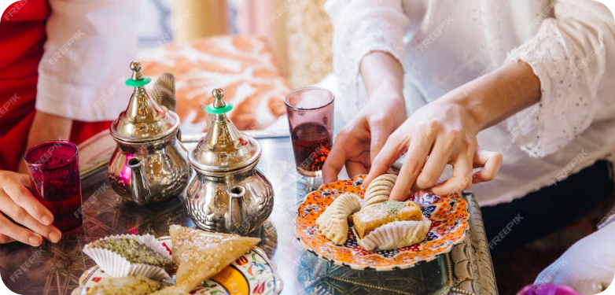
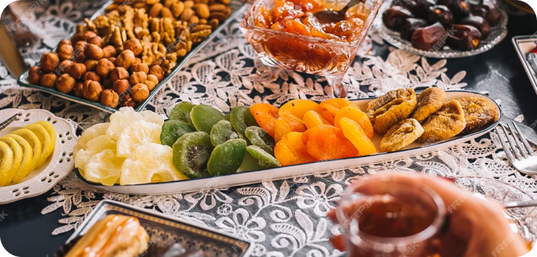
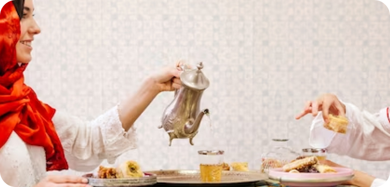
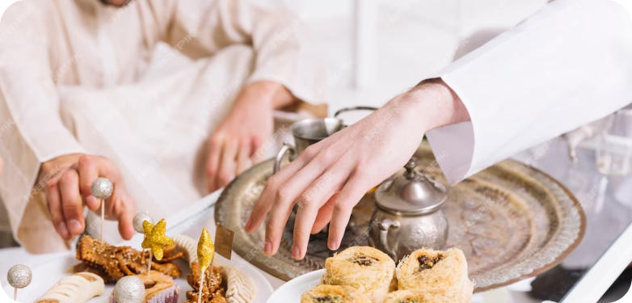

Our Blog
Embracing the richness of diverse cultures, this article explores the art of catering for cultural celebrations, focusing on the significance of traditional dishes in creating memorable events. From understanding cultural nuances to crafting authentic menus, discover the key elements that contribute to a truly immersive and delightful catering experience.
1. Cultural Sensitivity: Delve into the importance of cultural sensitivity when catering for diverse celebrations, highlighting the need for respect and understanding of various customs and traditions.
2. Customized Menus: Explore the concept of creating customized menus that reflect the culinary traditions of specific cultures, ensuring an authentic and meaningful dining experience for attendees.
3. Collaboration with Clients: Discuss the collaborative process with clients from different cultural backgrounds, emphasizing the value of open communication to tailor catering services according to their preferences.
4. Incorporating Symbolism: Examine how incorporating symbolic elements into the menu can add depth and meaning to cultural celebrations, creating a connection between the food served and the significance of the event.
5. Versatility in Cuisine: Showcase the versatility of catering services in adapting to various cuisines, whether it's a traditional Indian feast, a Chinese banquet, or a Mexican fiesta, demonstrating the ability to cater to a broad spectrum of cultural preferences.
6. Culinary Experts: Highlight the role of culinary experts in researching and mastering the intricacies of different cuisines, ensuring the authenticity and excellence of the dishes served during cultural celebrations.
7. Decor and Ambiance: Explore how catering services contribute to the overall ambiance of an event by incorporating culturally inspired decor, creating an immersive and visually appealing experience.
8. Cultural Fusion: Discuss the creative possibilities of fusing elements from different cultures, showcasing how innovative chefs can bring a fresh and unique perspective to traditional dishes while maintaining their authenticity.
9. Educational Component: Touch upon the educational aspect of cultural catering, where clients and guests have the opportunity to learn about the origins and significance of the dishes served, fostering a deeper appreciation for diversity.
10. Building Lasting Memories: Conclude by emphasizing how thoughtful and culturally informed catering can contribute to the creation of lasting memories, making cultural celebrations truly unforgettable for hosts and guests alike.
